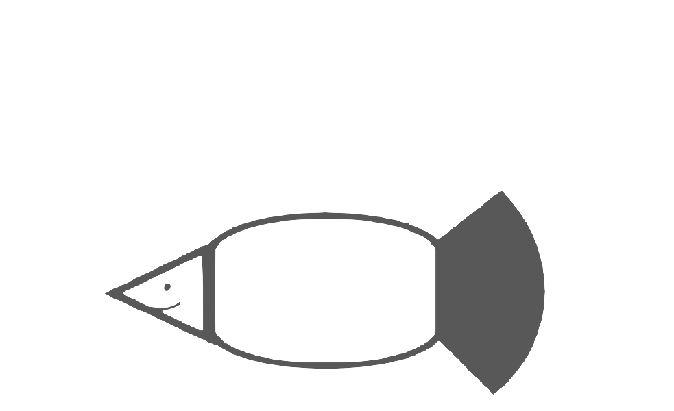

对不起骗了大家这么久，其实我是一条鲤鱼。

..-*=.
......:::....... .:=*****:.
..:=++*++=---------=++**+=:.. .:+********-.
...+*+:.. ..:=*+:.-***************-.
..:-*+.. .=***************:
.:=+*=**: .:***************+.
..-=- +*: .:****************:
..:+ +*: .:****************-
.+* ** +*: .:****************-
.-** +*: .:****************:
+...+ +*: .:****************.
:.:=****-. .:***************-
..:-++-.. ..-++-*************=.
..:=**+=:..... .....:-+**+:....-**********=..
...:-===++++++==-:... .-*******=.
..=***+.
..-*:.
嗯，实在是太敷衍了，所以我稍微加了点东西。
祝你好运，也祝你玩得开心。
黄昏的树林里分出两条路，
所幸在此我能同时去涉足
或许哪天还会再来看看这里的变化？启程了，再见啦。